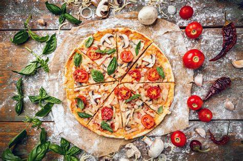
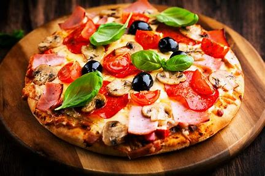

Italian Pizza

Italian Pizza originated back in the 16th century, back then was basically flatbread with vegetables and spices. The dish was know as "pizza bianca" or white pizza. these pizza's were made with tomatoes, garlic, oregano, and olive oil and were typically served as an appetizer.

It wasn't until 1889 when the now iconic Margherita pizza was created. The dish was named after Queen Margherita who visited Naples at the time. The pizza was topped with tomatoes, mozzarella cheese, and basil, representing the colors of the Italian flag.
Frozen pizza
This is the only thing I had on hand